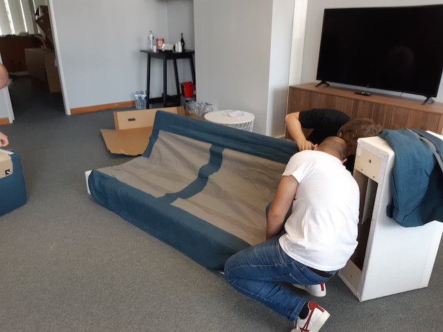
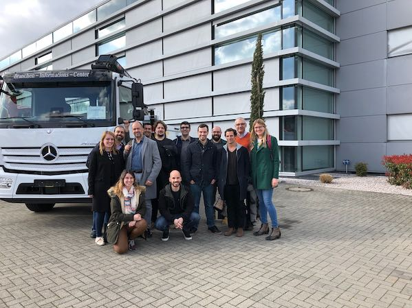
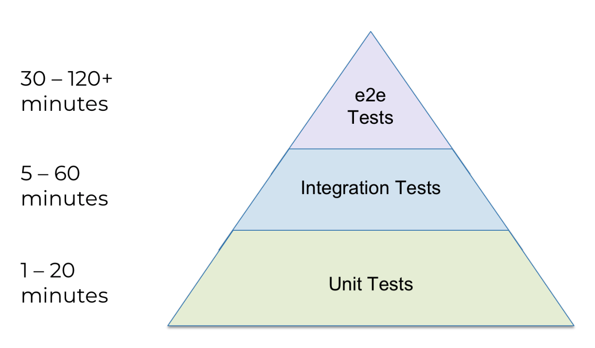

<!doctype html>
<html>
	<head>
		<meta charset="utf-8">
		<meta name="viewport" content="width=device-width, initial-scale=1.0, maximum-scale=1.0, user-scalable=no">

		<title>Quality Talks</title>

		<link type="image/x-icon" rel="shortcut icon" href="./img/tdh_logo.png" />

		<link rel="stylesheet" href="css/reset.css">
		<link rel="stylesheet" href="css/reveal.css">
		<link rel="stylesheet" href="css/theme/serif.css">

		<!-- Theme used for syntax highlighting of code -->
		<link rel="stylesheet" href="lib/css/monokai.css">

		<!-- Printing and PDF exports -->
		<script>
			var link = document.createElement( 'link' );
			link.rel = 'stylesheet';
			link.type = 'text/css';
			link.href = window.location.search.match( /print-pdf/gi ) ? 'css/print/pdf.css' : 'css/print/paper.css';
			document.getElementsByTagName( 'head' )[0].appendChild( link );
		</script>
	</head>
	<body>
		<div class="reveal">
			<div class="slides">
				<section data-markdown>
					<script type="text/template">
						## Enabling **Quality** at Tech & Data Hub

						
					</script>
				</section>
				<section data-markdown>
					<script type="text/template">
						### Enabling Code & Processes Quality - A unique journey

						> Ask yourself, how many times in your professional career will you have the opportunity
						to be involved in the inception of a technology hub? No legacy code or processes, just
						this unique opportunity for data driven innovation and collaboration?
					</script>
				</section>
				<section data-markdown>
					<script type="text/template">
						### About me

						<div class="row">
							<div class="column" style="float: left; width: 25%">
								
							</div>
							<div class="column" style="float: left; width: 75%">
								<ul style="list-style-type:none">
									<li></li>
									<li>10+ years on data engineering and software development</li>
									<li>GitHub: <a href="https://github.com/necosta">necosta</a></li>
									<li>Twitter: <a href="https://twitter.com/NelsonCosta85">@nelsoncosta85</a></li>
								</ul>
							</div>
						</div>
					</script>
				</section>
				<section data-markdown>
					<script type="text/template">
						### What do we do @ TDH?

						> Within Daimler Trucks & Buses, we collaborate on exciting projects,
						exploring the potential in telemetry data and delivering services that will
						create a more sustainable future for transportation
					</script>
				</section>
				<section data-markdown data-separator="^\n---\n$" data-separator-vertical="^\n--\n$">
					<script type="text/template">
						### How did we arrive to Lisbon?

						> We were created as a new technology hub for **Daimler Trucks & Buses**

						--

						### Daimler Trucks ...

						

						--

						### And Buses

						

						--

						### From past...

						

						--

						### To Present

						<div class="row">
							<div class="column" style="float: left; width: 53%">
								
							</div>
							<div class="column" style="float: right; width: 47%">
								
							</div>
						</div>
					</script>
				</section>
				<section data-markdown data-separator="^\n---\n$" data-separator-vertical="^\n--\n$">
					<script type="text/template">
						### TDH Timeline

						* Nov 2018: We started!

						

						--

						* Jan-Mar 2019:
							* Lisbon workshop
							* Stuttgart business travel

						

						--

						* May 2019: First delivered projects:
							* Fuel efficiency (in partnership with Daimler Trucks Asia)
							* Geo-elevation global service

						--

						* Sep 2019: Multiple exciting projects under way:
							* Fine-grained trip segmentation
							* e-Mobility projects
							* Global services infrastructure
					</script>
				</section>
				<section data-markdown data-separator="^\n---\n$" data-separator-vertical="^\n--\n$">
					<script type="text/template">
						### Our Principles

						* Open Source best practices
						* Agile & DevOps oriented process
						* Scalable code ready for Big Data

						--

						### Best practices

						* Code reviews
						* CI/CD
						* Automated testing

						--

						### Agile & DevOps oriented process

						* Finding the right [DevOps topology](https://web.devopstopologies.com/)
						* Be able to compromise on technology and programming language
						* Replace unnecessary meetings with collaborative messaging tools

						--

						### Scalable code and infra

						* Use scalable software (Spark, Kafka, Flink, ...)
						* Use scalable infrastructure and databases
					</script>
				</section>
				<section data-markdown>
					<script type="text/template">
						### The team

						> Every great company is built by great people (Sara Gorjão)

						Focus on **Data** Science, **Data** Engineering and (backend) **Software** development

					</script>
				</section>
				<section data-markdown data-separator="^\n---\n$" data-separator-vertical="^\n--\n$">
					<script type="text/template">
						### Enabling Quality - Choosing the Tech Stack

						> There is no one single tool/technology/process for all situations

						--

						### So... Be Agile and improve!

						

						--

						### Methodologies

						* Scrum/Kanban/Scrumban
						* Demos/Retros
						* OKRs (Objectives and key results)

						--

						### Programming languages

						* Java and Scala
						* Python and Jupyter Notebooks
						* Terraform and Ansible

						--

						### Ecosystem

						* Confluence and JIRA
						* Azure as IaaS
						* JFrog Artifactory
						* Drone CI
					</script>
				</section>
				<section data-markdown data-separator="^\n---\n$" data-separator-vertical="^\n--\n$">
					<script type="text/template">
						## Principles

						> While technologies come and go, principles and good practices should be constant

						--

						### Software architecture principles

						* Build in small increments
						* Change should not be expensive
						* Do not use speculation to add extra complexity to the architecture
						* Stop to think what are the bottlenecks (what can go wrong)

						--

						### Testing

						> If your code does not have automated tests, it’s broken. You just don’t know it yet...

						* Unit tests
						* Integration tests
						* Smoke tests (aka Sanity checks)
						* Acceptance tests

						--

						### Testing

						

						--

						### Static code analysis

						* Finds bugs and vulnerabilities early
						* Consistency
						* You can define your project specific rules

						--

						### DevOps/SRE (Site Reliability Engineering)

						* Install, Configure, Provision, Deploy, Secure, Monitor, Log, Backup...
						* High availability, scalability, performance, network, cost optimization, ...
						* Documentation, testing and maintenance

					</script>
				</section>
				<section data-markdown data-separator="^\n---\n$" data-separator-vertical="^\n--\n$">
					<script type="text/template">
						### How do we ensure quality?

						<div class="row" style="display:block; margin:auto; width: 30%">
							<video muted>
								<source data-src="img/quality_checks.mp4" type="video/mp4" />
							</video>
						</div>

						--

						### Everyday tasks

						* Automate quality checks (when possible)
						* Fortnight feedback loops on demos and retrospectives
						* Only recruit great people and maintain high retention rate
					</script>
				</section>
				<section>
					<section data-markdown>
						<script type="text/template">
							### Everyday Challenges
						</script>
					</section>
					<section data-markdown>
						<script type="text/template">
							#### Navigating as a speed boat around an oil tanker...

							
						</script>
					</section>
					<section data-markdown>
						<script type="text/template">
							#### Finding the customer... can be a challenge!

							
						</script>
					</section>
					<section data-markdown>
						<script type="text/template">
							#### Understanding the data...

							
						</script>
					</section>
					<section data-markdown>
						<script type="text/template">
							#### ...And explaining data science is not a magic bullet

							<div class="row" style="display:block; margin:auto; width: 30%">
								<video muted>
									<source data-src="img/data_science_says_no.mp4" type="video/mp4" />
								</video>
							</div>
						</script>
					</section>
				</section>
				<section data-markdown>
					<script type="text/template">
						### At last... Some personal tips
						* Learn by actual reading source code in Inner and Open Source reference projects<!-- .element: class="fragment" data-fragment-index="1" -->
						* Read, attend meet-ups/events and contribute on Open Source projects<!-- .element: class="fragment" data-fragment-index="2" -->
						* Go extra mile on automation<!-- .element: class="fragment" data-fragment-index="3" -->
					</script>
				</section>
				<section data-markdown>
					<script type="text/template">
						### Want to join?

						[Go to https://techhublisbon.io/careers](https://techhublisbon.io/careers)
					</script>
				</section>
				<section data-markdown data-separator="^\n---\n$" data-separator-vertical="^\n--\n$">
					<script type="text/template">
						### Thank you!

						Any questions?

						https://github.com/necosta/quality-talks

						
						

						--

						Have a quality TDH biscuit :)
						<div class="row" style="display:block; margin:auto; width: 50%">
							
						</div>
					</script>
				</section>
			</div>
		</div>

		<script src="js/reveal.js"></script>

		<script>
			// More info about config & dependencies:
			// - https://github.com/hakimel/reveal.js#configuration
			// - https://github.com/hakimel/reveal.js#dependencies
			Reveal.initialize({
				controls: true,
				progress: true,
				center: true,
				slideNumber: true,
				history: true,
				autoPlayMedia: true,
				dependencies: [
					{ src: 'plugin/markdown/marked.js' },
					{ src: 'plugin/markdown/markdown.js' },
					{ src: 'plugin/notes/notes.js', async: true },
					{ src: 'plugin/highlight/highlight.js', async: true }
				]
			});
		</script>
	</body>
</html>
